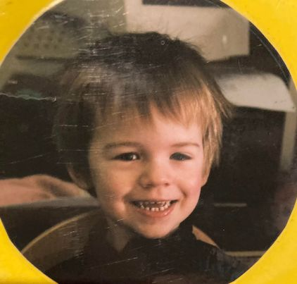
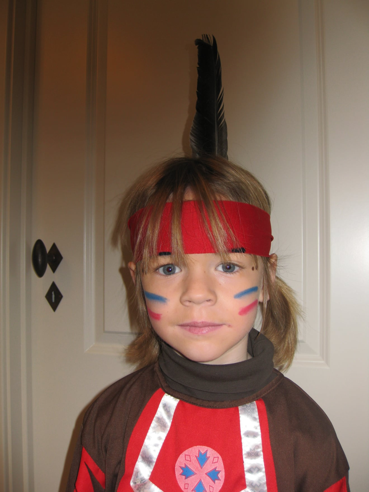
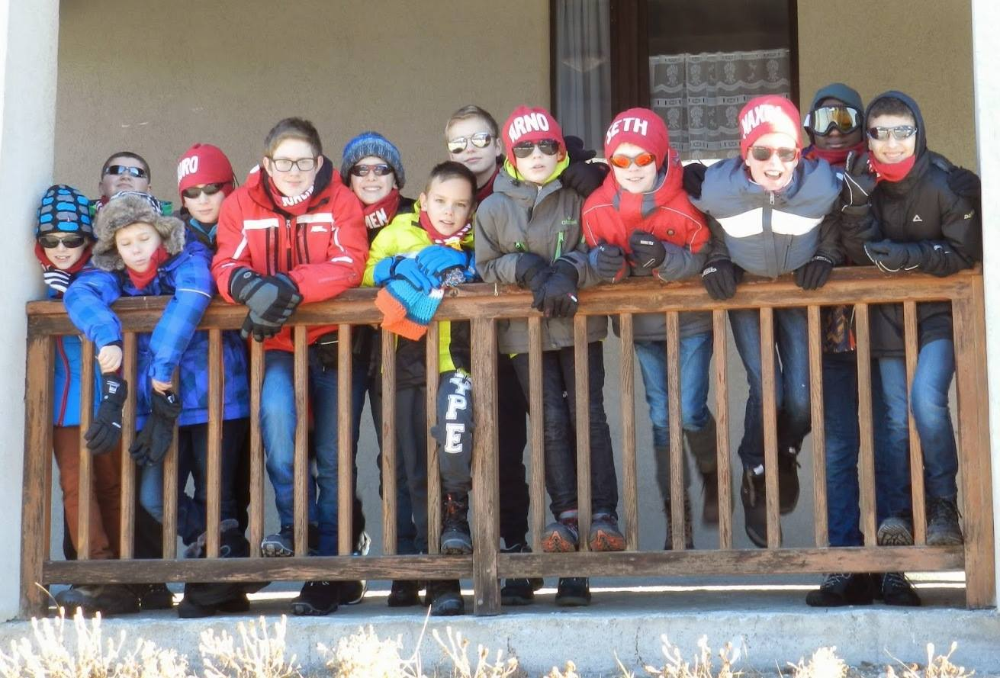

Education
Kleuterschool
Mijn allereerste schooldag bracht ik door op de Gemeentelijke Basischool 'Blokbos' in Lot, alsook de volgende 4 jaar van mijn kleuterschoolperiode.

Lagere school
Zo gaat mijn verhaal nog verder in Blokbos, waar ik dan 6 jaar in de lagere school zat en daar "afstudeerde" in het lager onderwijs




Middelbaar
Ook in het middelbaar zat ik 6 jaar op dezelfde school: Don Bosco Halle. De eerste 4 jaar deed ik "Industriële Wetenschappen". Een richting met veel wiskunde, mechanica en elektriciteit. Dit werd te zwaar en ik vond het niet interresant. Dus in de derde graad ben ik overgeschakeld naar "Industriële ICT". Hier heb ik kennis opgepikt van "C#".

Hogeschool
Nu ben ik een eerstejaar aan de hogeschool Erasmus Brussel. Ik koos voor Multimedia omdat het probleemoplossend denken bij programmeren iets voor mij is. Dit merkte ik al in het middelbaar toen ik C# leerde, maar het leek nog leuker om website's en designs te maken in plaats van de computerprogramma's die we toen maakten.